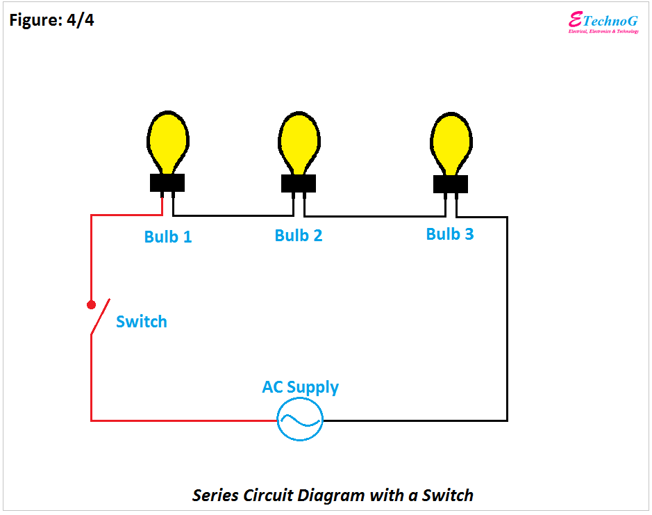
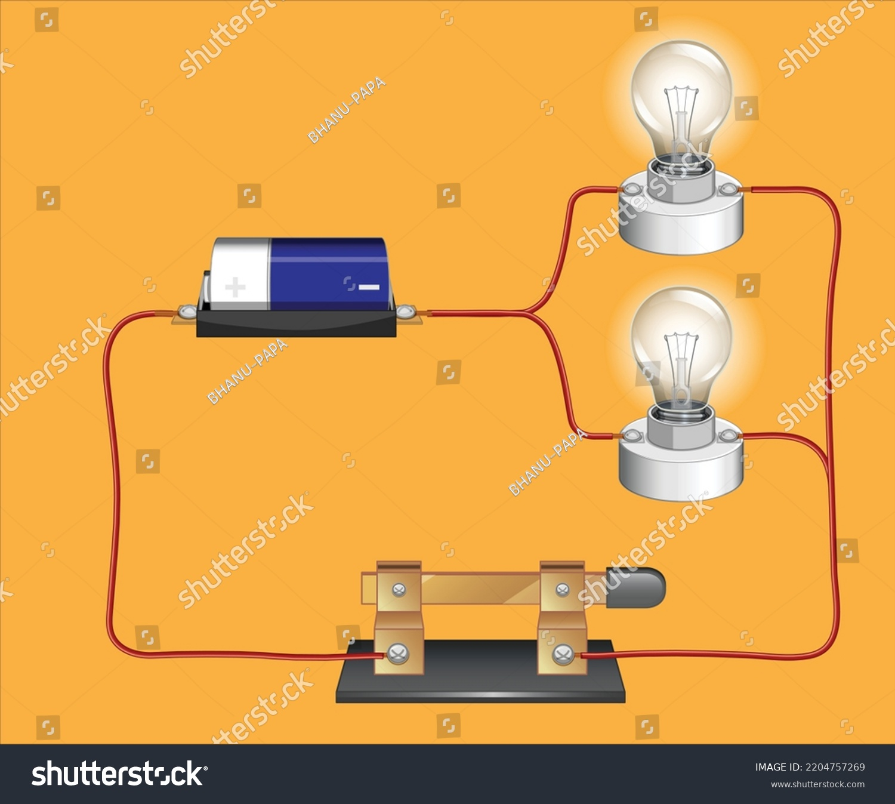

Series Circuit
A series circuit connects all components one after another in a single path. The same current flows through each component, and the voltage is divided across them.
A series circuit where electricity flows through each component one after another.
Examples of Series Circuits:
- Flashlights
- Old-style Christmas lights
- Simple battery-operated toys
- Electric kettles
Advantages:
- Simple to build and understand
- Requires fewer wires
- Same current flows through all components
Disadvantages:
- If one component fails, the whole circuit breaks
- Voltage is divided across components
- Not ideal for most household applications
Parallel Circuit
A parallel circuit connects components across the same voltage points. Each branch gets the same voltage, and components operate independently.
A parallel circuit where each component has its own separate path to power.
Examples of Parallel Circuits:
- Home electrical wiring
- Street lighting
- Car headlights
- Ceiling fans with multiple lights
Advantages:
- Each component works independently
- Same voltage across all branches
- One device failure doesn’t affect the others
Disadvantages:
- More wires and complex construction
- May draw more current from the power source
- Can be harder to troubleshoot